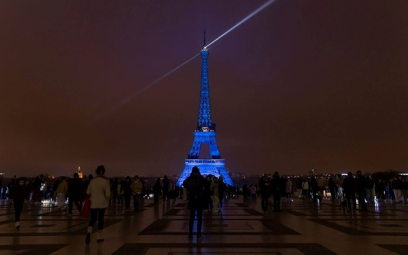

Accès rapides
03.
04
11h30 · Enfants. Hip hop et parkour, danse et karaté ou encore photo et boxe dans le 19e arrondissement…Pour les vacances de printemps, Paris Sport Vacances propose des stages mixtes « Paris Sport Vacances + Culture » pour les enfants âgés de 7 à 17 ans. Découvrez ces stages qui font dialoguer l'art et le sport sur la plateforme et inscrivez votre enfant !
EN SAVOIR +03.
04
11h25 · Autisme. À l'occasion de la journée mondiale de la sensibilisation à l'autisme, le 2 avril, la tour Eiffel s'est parée de bleu en signe de soutien aux personnes autistes et à leurs familles.
EN SAVOIR + 